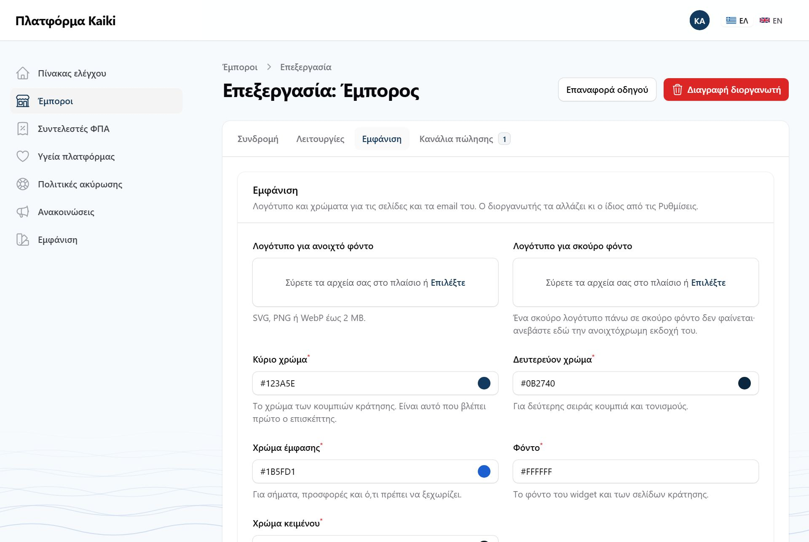
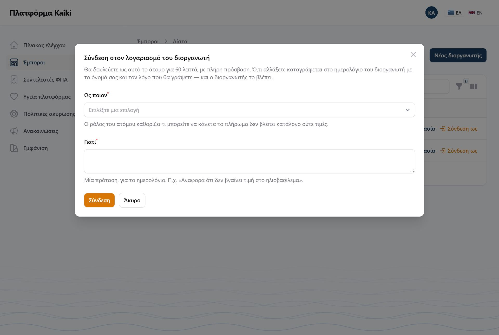
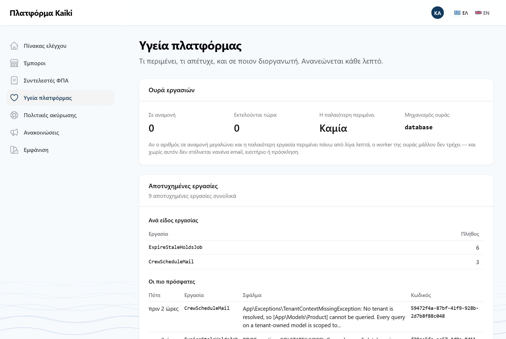
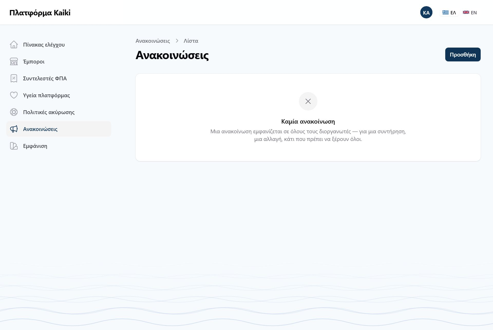
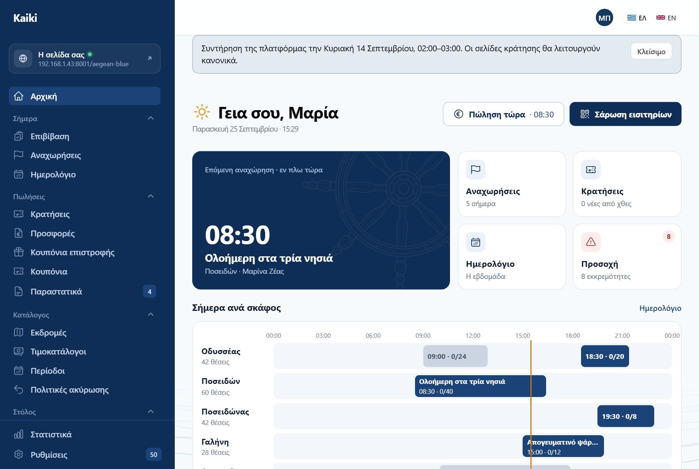
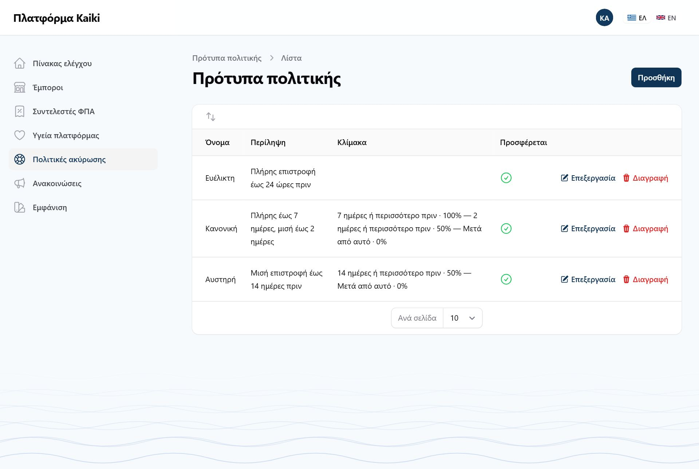

Αυτό το μέρος δεν αφορά κανέναν διοργανωτή. Είναι για όποιον λειτουργεί το ίδιο το Kaiki, και βρίσκεται σε ξεχωριστή διεύθυνση με ξεχωριστό λογαριασμό.
Ο πίνακας του διοργανωτή είναι στο /app και ο πίνακας της πλατφόρμας
στο /admin. Ένας λογαριασμός ανήκει στον έναν ή στον άλλον, ποτέ και
στους δύο, και ο έλεγχος γίνεται στην πόρτα κάθε πίνακα.
Ο λογαριασμός της πλατφόρμας δεν ανήκει σε κανέναν διοργανωτή, οπότε δεν έχει δικαιώματα μέσα σε κανέναν — από την κονσόλα του δεν διαβάζει κρατήσεις, ονόματα επισκεπτών ή στοιχεία επικοινωνίας κανενός. Ο μόνος δρόμος προς τον πίνακα ενός διοργανωτή είναι η «Σύνδεση ως», που περιορίζεται σε 60 λεπτά, καταγράφεται στο ιστορικό του διοργανωτή και φαίνεται σε κάθε σελίδα.
Το μενού έχει επτά γραμμές: Πίνακας ελέγχου, Έμποροι (οι διοργανωτές), Συντελεστές ΦΠΑ, Υγεία πλατφόρμας, Πολιτικές ακύρωσης (τα πρότυπα), Ανακοινώσεις και Εμφάνιση (η εμφάνιση της ίδιας της πλατφόρμας — όχι ενός διοργανωτή).

Από εδώ ανοίγει νέος διοργανωτής: επωνυμία, διεύθυνση, email, και ο ιδιοκτήτης, που παίρνει πρόσκληση και ορίζει μόνος του κωδικό — δεν τον πληκτρολογεί κανείς άλλος. Στην ίδια φόρμα δημιουργίας ορίζετε από την αρχή και όσα έχετε συμφωνήσει μαζί του στο τηλέφωνο — επιβίβαση, QR, σελίδες που δημοσιεύονται, SMS, οδηγός πρώτης ρύθμισης, κανάλια — και την εμφάνισή του: τα δύο λογότυπα και τα χρώματα. Όλα χωρίς δεύτερη επίσκεψη. Η κατάσταση βγαίνει από το πακέτο: μια δοκιμή ξεκινά «σε δοκιμαστική περίοδο».

Επωνυμία και ΑΦΜ τα αλλάζει μόνο ο ίδιος ο διοργανωτής. Λογότυπο και χρώματα τα βάζετε εσείς όταν ανοίγετε τον λογαριασμό, και ο διοργανωτής τα αλλάζει μετά από τις Ρυθμίσεις → «Επωνυμία». Πάνω δεξιά είναι δύο κουμπιά: «Επαναφορά οδηγού», που ξανανοίγει τον οδηγό πρώτης ρύθμισης, και «Διαγραφή διοργανωτή».
Κάθε αλλαγή ζητά αιτιολογία πριν αποθηκευτεί, και γράφεται στο ιστορικό ενεργειών του ίδιου του διοργανωτή — ποιος, πότε, γιατί, και μόνο ό,τι άλλαξε. Αν σας ρωτήσει «ποιος μας έβαλε σε μόνο ανάγνωση;», η απάντηση είναι στη δική του οθόνη.
Το πακέτο αλλάζει τι μπορεί να φτιάξει. Solo και δοκιμή: ένα σκάφος. Fleet: πέντε. Pro: όσα θέλει, μαζί με δικό του domain και webhooks. Το όριο ελέγχεται τη στιγμή που ο διοργανωτής φτιάχνει κάτι καινούργιο, με μήνυμα και κουμπί αναβάθμισης· αν τον μεταφέρετε σε μικρότερο πακέτο, δεν χάνει τίποτα από όσα έχει — απλώς δεν προσθέτει άλλο μέχρι να χωράει.
Ζητά να γράψετε ακριβώς το όνομα του διοργανωτή και έναν λόγο, που μπαίνει στο ιστορικό ενεργειών δίπλα στο ποιος το έκανε. Μετά τη διαγραφή οι σελίδες του σταματούν να ανοίγουν, τα κλειδιά API του παύουν να δουλεύουν και η ομάδα του δεν μπορεί να συνδεθεί. Κρατήσεις, παραστατικά και ιστορικό μένουν όλα, και η διαγραφή αναιρείται από την ίδια οθόνη με «Επαναφορά διοργανωτή». Οριστική διαγραφή από οθόνη δεν υπάρχει.

Ο πρώτος είναι ο Έλεγχος επιβίβασης. Κλειστός σημαίνει ότι ο διοργανωτής δεν επιβιβάζει κανέναν μέσα από το Kaiki: δεν ανοίγει καμία από τις δύο σελίδες επιβίβασης — ούτε αυτή που δουλεύει χωρίς σήμα — και τα εισιτήρια βγαίνουν χωρίς QR. Για τον καπετάνιο που έχει δώδεκα άτομα μπροστά του και δεν του χρειάζεται δεύτερη λίστα να κρατάει ενήμερη.
Ό,τι είναι καταγραφή και όχι κίνηση μένει ακριβώς όπως ήταν: η κατάσταση επιβατών τυπώνεται, η αναχώρηση ολοκληρώνεται, η κράτηση κλείνει την ημέρα της. Ο διακόπτης αφαιρεί μια οθόνη, όχι ένα γεγονός.
Ο δεύτερος είναι ο Επιβίβαση με QR, και εμφανίζεται μόνο όσο ο πρώτος είναι ανοιχτός. Είναι ανοιχτός για κάθε διοργανωτή, και τον κλείνετε για όποιον δεν σαρώνει εισιτήρια — ένα σκάφος, λίγοι επιβάτες που τους ξέρει. Κλειστός σημαίνει: εισιτήρια χωρίς QR, καμία σάρωση, και επιβίβαση από τη λίστα με ένα πάτημα δίπλα στο όνομα, και στη σελίδα που δουλεύει χωρίς σήμα. Δεν σβήνεται κανένα δεδομένο.
Όσα εισιτήρια έχουν ήδη σταλεί με QR δεν σαρώνονται πια μόλις κλείσει. Οι επιβάτες τους επιβιβάζονται κανονικά από τη λίστα, αλλά το πλήρωμα πρέπει να το ξέρει πριν βρεθεί στην προβλήτα.
Στην ίδια καρτέλα: οι σελίδες που δημοσιεύονται (πλήρης ιστοσελίδα ή μόνο σελίδες κρατήσεων — ο διοργανωτής το βλέπει αλλά δεν το αλλάζει), η τιμή «έως Ν άτομα + ανά επιπλέον» για τις ναυλώσεις, τα SMS (κάθε μήνυμα χρεώνεται στον λογαριασμό του διοργανωτή), και ο οδηγός πρώτης ρύθμισης, που κλείνει όταν έχετε στήσει εσείς τον λογαριασμό. Όλα είναι κλειστά για όλους, εκτός αν τα ζητήσει ο διοργανωτής.

Από τη λίστα εμπόρων, «Σύνδεση ως» σε μια γραμμή. Διαλέγετε ένα άτομο της ομάδας του διοργανωτή και γράφετε σε μία πρόταση τον λόγο — «Αναφορά ότι δεν βγαίνει τιμή στο ηλιοβασίλεμα». Πατώντας «Σύνδεση» βρίσκεστε στον πίνακα του διοργανωτή, ως αυτό το άτομο, για 60 λεπτά.

Τρία κομμάτια, από πάνω προς τα κάτω:
Κάθε ενέργεια της πλατφόρμας πρέπει να καταγράφεται — ποιος, πότε, γιατί — και το ιστορικό ενεργειών σήμερα ανήκει σε κάθε διοργανωτή· μια αποτυχημένη εργασία συχνά δεν ανήκει σε κανέναν. Η επανάληψη γίνεται στον διακομιστή, με την εντολή που γράφει η οθόνη δίπλα σε κάθε εργασία.

Γράφετε το μήνυμα στα ελληνικά και στα αγγλικά, διαλέγετε αν είναι ενημέρωση ή προειδοποίηση, και προαιρετικά από πότε ως πότε ισχύει. Εμφανίζεται πάνω σε κάθε σελίδα του πίνακα κάθε διοργανωτή, σε κάθε ρόλο. Ο καθένας το κλείνει μόνος του, και μένει κλειστό για εκείνον μέχρι την επόμενη ανακοίνωση. Φαίνεται μόνο η πιο πρόσφατη.


Είναι οι έτοιμες πολιτικές που βλέπει ένας νέος διοργανωτής στο βήμα «Πολιτική ακύρωσης» του οδηγού — σήμερα «Ευέλικτη», «Κανονική» και «Αυστηρή». Εδώ τις αλλάζετε, προσθέτετε καινούργιες, αλλάζετε τη σειρά τους με το σύρσιμο, ή βγάζετε μία από την προσφορά. Όταν ο διοργανωτής διαλέξει ένα πρότυπο, αντιγράφεται σε δική του πολιτική· μια μεταγενέστερη αλλαγή του προτύπου δεν αγγίζει όσους το έχουν ήδη διαλέξει.

Ο κάθε συντελεστής είναι μία γραμμή: κωδικός, ποσοστό, κατηγορία myDATA, ημερομηνία από την οποία ισχύει, και περιγραφή στα ελληνικά και στα αγγλικά. Ο διοργανωτής δεν φτιάχνει συντελεστές — διαλέγει από αυτή τη λίστα, ανά εκδρομή.
Συντελεστής δεν διορθώνεται ποτέ επί τόπου. Κάθε τιμολόγιο κρατά παγωμένο τον συντελεστή που ίσχυε όταν εκδόθηκε· μια αλλαγή εδώ θα τα ξανάγραφε όλα σιωπηλά. Γι' αυτό στην οθόνη ενός συντελεστή το ποσοστό και η ημερομηνία είναι κλειδωμένα, και πάνω δεξιά υπάρχει το κουμπί «Νέος συντελεστής με αυτόν τον κωδικό»: ανοίγει νέα γραμμή με τον κωδικό και την περιγραφή συμπληρωμένους, και αφήνει κενά το ποσοστό και την ημερομηνία, που τα γράφετε εσείς.
Συντελεστής που έπαψε να ισχύει δεν σβήνεται. Τον βγάζετε από τη λίστα επιλογής και μένει εκεί, γιατί παλιές εγγραφές δείχνουν ακόμη σε αυτόν.
Το Kaiki δεν αποφασίζει ποσοστά και δεν τα γράφει πουθενά μέσα στον κώδικά του. Η σύμβαση λέει ότι η μεταφορά επιβατών είναι τυπικά ένα ποσοστό και οι λοιπές τουριστικές υπηρεσίες ένα άλλο, και αρνείται ρητά να τα κλειδώσει: αλλάζουν, και διαφέρουν ανά νησιωτικό καθεστώς.
Πρακτικά: ο λογιστής σας λέει ποιοι συντελεστές ισχύουν, τους περνάτε εδώ μία φορά, και από εκεί και πέρα ο διοργανωτής απλώς διαλέγει.
Το λογότυπο (ένα για ανοιχτό και ένα για σκούρο θέμα), το εικονίδιο της καρτέλας και τα δύο χρώματα που βλέπουν όλοι στους δύο πίνακες και στην οθόνη εισόδου. Αν τα δύο χρώματα δεν διαβάζονται καλά μεταξύ τους, η οθόνη το λέει — και σας αφήνει να τα αποθηκεύσετε έτσι κι αλλιώς.